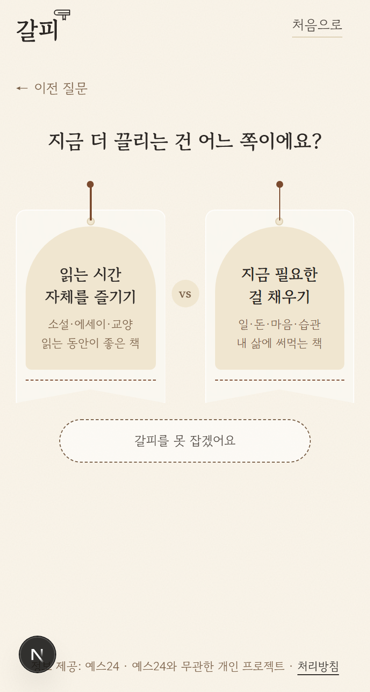
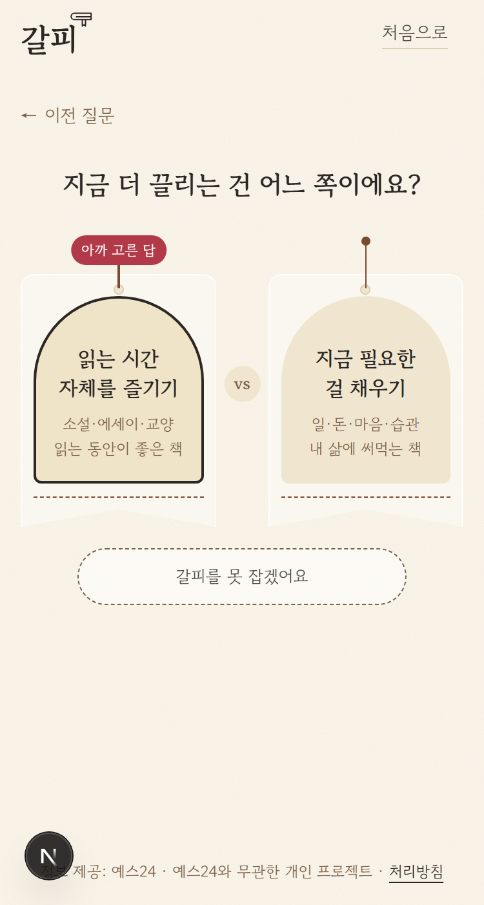
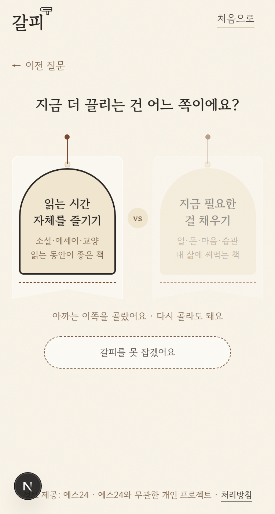
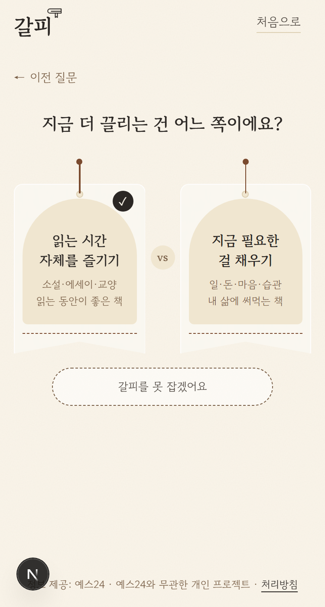

이전 질문으로 돌아왔을 때 — 아까 고른 답 보여 주기
"읽는 시간 자체를 즐기기"를 고르고 [← 이전 질문]으로 돌아온 화면 (휴대폰 375px, 실제 화면에 덧칠)
지금돌아와도 무엇을 골랐는지 표시 없음
A · "아까 고른 답" 알약고른 카드 끈 위에 빨간 알약 + 창 테두리. 가장 분명함
B · 다른 쪽 흐리게 + 한 줄고르지 않은 쪽을 흐리게, 아래에 "다시 골라도 돼요". 바꿔도 된다는 말까지
C · 작은 체크고른 카드 위에 작은 ✓ 하나. 가장 조용함